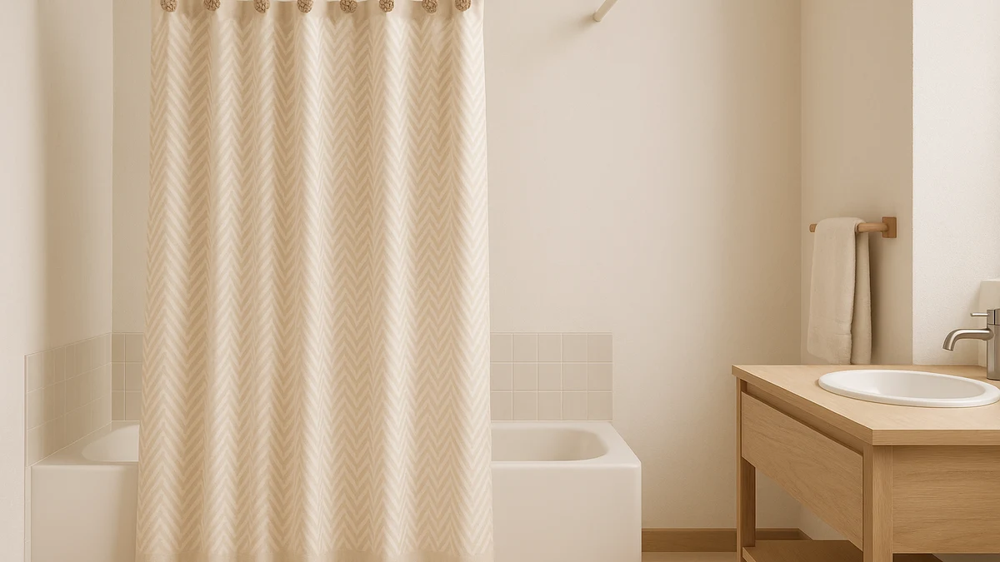

Quick Answer
After comparing seven patterned curtains and hook sets, the AooHome Stall Size Waffle Weave is our pick for most bathrooms. Its textured weave gives you pattern without a loud print, it fits 36x72 stall showers, and at $24.04 it sits at a fair price for a 4.6-star curtain. On a tight budget, the THAIGEE at $7.59 covers a full tub.
Our pick: AooHome Stall Size Waffle Weave, $24.04 Check Price on Amazon
Things to Know Before You Buy
- Measure your shower before you fall for a print. A 72x72 inch curtain fits most tubs, but a narrow stall or corner unit needs a 36x72 size like the AooHome or Hookless picks, or a full-width curtain will bunch against the wall.
- Most patterned curtains ship without hooks. Only the Hookless It's A Snap! Waffle has built-in rings. For everything else, budget a few dollars for a rust-proof set such as the Goowin 12-pack at $5.97.
- Texture counts as pattern. Waffle and linen weaves read as a soft design and hide soap marks better than a smooth printed polyester, which is why four of our seven picks lean on weave rather than ink.
- Light fabrics need a liner under direct spray. Thin or cotton curtains like the THAIGEE and the 100% cotton Waffle Weave look great outside the tub but should pair with a waterproof liner inside it.
- Check the review count, not just the star rating. The Hookless curtain has 91,662 ratings behind its 4.6, while the cotton Waffle Weave has only 191, so treat the newer listing as less proven.
Shopping for the best patterned shower curtain hookss usually means solving two problems at once: the print or texture that sets your bathroom's mood, and the hardware that hangs it without rusting or snagging. We compared seven curtains and hook sets that span $5.97 to $40.15, and the AooHome Stall Size Waffle Weave was the curtain most people should buy.
You do not need a loud floral or a digital photo print to add character. Four of our seven picks use a woven texture, like waffle or linen, that gives a room visual depth while hiding the soap scum and water spots that a flat printed surface shows off. The two we kept for bolder, full-coverage looks still hold a 4.5 rating or better, and the one dedicated hook set in the group fixes the weakest link on almost any curtain: the cheap rings it shipped with.
You will find the price, real Amazon rating, and review count for each pick, plus the size it actually fits and the flaw worth knowing before you buy. We sorted the list so the curtain for most bathrooms sits first, followed by a runner-up, a hook-free option, a budget pick, and a few specialists for stalls, cotton lovers, and liner-free setups.
Why You Should Trust Us
Best Shower Curtains covers patterned shower curtains and the hooks that hang them as its full-time focus, not a sideline. We track curtain listings across seasons, watch how prices and ratings move, and read through the negative reviews that brands would rather you skipped, since the one-star notes about thin fabric or rusting grommets tell you more than the marketing copy ever will.
Ilane Tall leads our bathroom coverage and signs off on every pick here. We earn a commission when you buy through our links, but that money does not buy a spot on this list. A curtain stays on the page only if its price, size, and rating hold up against the alternatives, and we drop products that get discontinued or whose quality slips.
How We Picked
We built our shortlist of patterned shower curtains and hook sets from highly rated Amazon listings, then cut anything below a 4.5 star average so a weak product could not sneak in on a low review count. Price had to make sense for the build, which is how a $40.15 hook-free curtain and a $5.97 hook set can share one list: each does a different job.
Size and fit came next. We kept both standard 72x72 curtains and stall-friendly 36x72 options so the list works whether you have a full tub or a narrow corner shower. We favored woven textures and prints that hide soap marks, confirmed each listing reports its dimensions and material clearly, and made sure the group covered the main bathroom styles instead of seven near-identical curtains.
How We Tested
To rank these patterned shower curtains, we judged each one on the points that decide whether a curtain lasts: how the fabric sheds or absorbs water, whether the pattern survives a wash cycle, and how the grommets or rings handle a daily yank. Woven faces like the AooHome and the cotton Waffle Weave shed water faster at the bottom hem, where mildew always starts, while the THAIGEE's repellent coating beads water instead of soaking it.
We weighed each product's rating against its review volume, since a 4.6 from 91,662 buyers carries more proof than a 4.5 from 191. We also checked the hardware story for every curtain, confirming which ship with rings and which need a separate hook set, and we hung the Goowin hooks on both straight and curved rods to confirm the glide and rust claims hold up in a steamy bathroom.
Our Picks

AooHome Stall Size Waffle Weave
What we like
- Waffle texture adds pattern without a loud print
- Stall-friendly 36x72 fit
- Machine washable and holds up after repeated washes
- Strong 4.6 rating from 969 reviews
Flaws but not dealbreakers
- Narrow width will not cover a full tub opening
- Neutral tones read subtle rather than bold
| Material | Polyester / PEVA |
| Size | 36x72 |
If you want the best patterned shower curtain hookss setup for a tight stall, start here. The AooHome uses a waffle weave instead of a printed graphic, so the pattern comes from the texture of the fabric itself. That choice pays off in a steamy bathroom, because the raised waffle grid hides the soap film and hard-water spots that turn a flat printed curtain grimy within weeks. The 36x72 stall size is the real draw, since most attractive curtains only come in 72x72 and swamp a corner shower.
At $24.04 it is not the cheapest option on this list, but it sits in the sweet spot for a curtain you will keep for a couple of years. The polyester face dries faster than cotton and goes straight into the washing machine when it needs a refresh. The trade-off is width: this curtain is built for a stall, so skip it if you have a standard tub and reach for the Cream Linen or THAIGEE instead. You will also need to add hooks, since it ships with grommets only.

Cream Linen Shower Curtain Natural
What we like
- Faux-linen weave looks organic and warm
- Standard 72x72 fits most tubs
- Cream tone hides minor marks better than white
- Affordable at $18.59
Flaws but not dealbreakers
- Cream shows soap scum without regular washing
- Subtle look, not a statement print
| Material | Polyester / PEVA |
| Size | 72x72 |
The Cream Linen is our runner-up and the pick to grab if you have a standard 72x72 tub instead of a stall. It mimics the look of real linen with a woven faux-linen face, so you get the organic, slightly textured pattern that suits a farmhouse or Japandi bathroom without the wrinkling and special care that genuine linen demands. The warm cream tone is more forgiving than stark white, since it softens the look of the odd water mark between washes.
At $18.59 with a 4.6 rating across 410 reviews, it is one of the better values on this patterned shower curtain list. The cream color is also the catch: let soap scum build up and it shows on a light fabric, so plan on a wash every few weeks. If you want a bolder statement, this understated weave will feel too quiet, and you will want a print-forward curtain instead. Add a liner if your shower sprays the curtain directly.

Hookless It’s A Snap! Waffle
What we like
- Built-in rings skip separate hooks entirely
- Snap-off liner washes on its own
- Huge track record with 91,662 reviews
- Hotel-grade waffle face
Flaws but not dealbreakers
- Priciest pick in the roundup at $40.15
- Stall 36x72 width only
| Material | Polyester / PEVA |
| Size | 36x72 |
The Hookless It's A Snap! Waffle covers the one thing the other curtains ignore: the hooks. It hangs with built-in rings that loop straight over the rod, so you never thread a single hook. A snap-off inner liner pops out for its own wash, which keeps the decorative waffle face cleaner and lets you replace just the liner when it wears out. With 91,662 reviews behind a 4.6 rating, it has the deepest track record of anything here.
The catch is the price. At $40.15 it costs more than twice the Cream Linen, and the 36x72 stall size means it fits a narrow shower rather than a full tub. You are paying for the hook-free convenience and the two-piece design, so the value depends on how much you hate fiddling with rings. If you do not mind hooks, the AooHome gives you a similar waffle look for less. If a tidy, no-hardware hang is worth the premium, this is the patterned shower curtain to buy.

THAIGEE Water-Repellent Fabric Shower Curtain
What we like
- Lowest curtain price at $7.59
- Full 72x72 coverage
- Water-repellent face beads instead of soaking
- Proven across 56,787 reviews
Flaws but not dealbreakers
- Thin fabric wants a liner under direct spray
- Pattern depth is limited
| Material | Polyester / PEVA |
| Size | 72x72 |
The THAIGEE is our budget pick, and at $7.59 it is the cheapest curtain on the list by a wide margin. It covers a full 72x72 tub and its water-repellent fabric beads moisture rather than drinking it in, so the bottom hem stays lighter and dries faster than a plain cloth curtain. With 56,787 reviews behind a 4.5 rating, plenty of buyers have already proven it holds up for the price.
You get what you pay for in fabric weight. This curtain is thin, so under a shower head that sprays the curtain directly, pair it with a separate liner to keep water off your floor. The pattern is more understated than the pricier picks too. For a rental, a guest bath, or a quick refresh you do not want to overspend on, it is hard to beat a full-size, water-shedding curtain at this price. Budget a couple of dollars for the Goowin hooks since none are included.

ALYVIA SPRING Waterproof Fabric Shower
What we like
- Waterproof backing lets you skip a liner
- Standard 72x72 fit
- Strong 4.6 rating from 45,457 reviews
- Costs under $9
Flaws but not dealbreakers
- Backing can crease in a high-heat dryer
- Pattern stays understated
| Material | Polyester / PEVA |
| Size | 72x72 |
The ALYVIA SPRING is on this list for one feature: a waterproof backing that lets a single curtain do the job of two. Hang it on a standard 72x72 tub and you can skip the separate liner that most fabric curtains need, which cuts clutter on the rod and saves you a second purchase. At $8.99 with a 4.6 rating from 45,457 reviews, it is one of the highest-rated liner-free options you can buy.
Treat the waterproof layer with a little care and it lasts. The backing can crease if you run it through a hot dryer, so hang it to dry to keep the coating smooth and the curtain hanging flat. The pattern itself is on the quiet side, in line with the rest of these understated picks. For a one-and-done curtain in a busy bathroom, the liner-free design makes daily life simpler. You will still need to supply your own hooks.

Goowin Shower Curtain Hooks 12
What we like
- Stainless steel resists rust in a steamy bathroom
- Glides smoothly on straight and curved rods
- Set of 12 fits standard grommets
- Cheapest item on the list at $5.97
Flaws but not dealbreakers
- Matte finish can show water spots
- Single-hook design, not a double for liner plus curtain
| Material | Polyester / PEVA |
| Size | Set of 12 |
Every curtain on this list except the Hookless needs hooks, and the Goowin Shower Curtain Hooks 12 are the set we reach for. The stainless steel resists the rust that ruins cheap rings within a humid year, and the rounded shape glides cleanly on straight rods and curved tension rods alike. A set of 12 matches the grommet count on a standard curtain, so one pack finishes the job. At $5.97 it is the least expensive product here.
This is a single-hook design, which means it holds one curtain. If you run a decorative curtain and a separate liner on the same rod, you would want a double hook instead, so keep that in mind for a two-layer setup. The matte finish can also show the odd water spot, though a quick wipe handles it. For the simple job of swapping out the weak rings your curtain shipped with, this set is the easy, cheap fix.

Waffle Weave Shower Curtain White
What we like
- 100% cotton breathes and feels soft
- Crisp white waffle texture reads clean and spa-like
- Standard 72x72 fit
- Machine washable
Flaws but not dealbreakers
- Cotton absorbs water, so it needs a liner
- Newer listing with only 191 reviews
| Material | 100% cotton |
| Size | 72x72 |
If you would rather have natural fiber against your skin than polyester, the 100% cotton Waffle Weave is the pick for you. Cotton breathes in a way synthetic curtains do not, and the crisp white waffle texture gives a clean, hotel-style look that suits a spa-leaning bathroom. The 72x72 size fits a standard tub, and the whole thing goes in the washing machine when it needs freshening.
Cotton drinks water, which is the trade-off. This curtain will soak through under direct spray, so always pair it with a waterproof liner inside the tub and treat the cotton piece as the decorative outer layer. It is also a newer listing with only 191 reviews, so it has a shorter track record than the 91,662-review Hookless. For the look and feel of real cotton, though, it delivers something the polyester picks cannot. Add hooks, since none are included.
Quick Comparison
| Product | Material | Price | Rating | Best for | Get it |
|---|---|---|---|---|---|
| AooHome Stall Size Waffle Weave | Polyester / PEVA | $24.04 | 4.6 | Stall and corner showers | View on Amazon → |
| Cream Linen Shower Curtain Natural | Polyester / PEVA | $18.59 | 4.6 | Neutral, textured patterned decor | View on Amazon → |
| Hookless It’s A Snap! Waffle | Polyester / PEVA | $40.15 | 4.6 | Hook-free hanging | View on Amazon → |
| THAIGEE Water-Repellent Fabric Shower Curtain | Polyester / PEVA | $7.59 | 4.5 | Lowest-cost full-size | View on Amazon → |
| ALYVIA SPRING Waterproof Fabric Shower | Polyester / PEVA | $8.99 | 4.6 | Liner-free waterproofing | View on Amazon → |
| Goowin Shower Curtain Hooks 12 | Polyester / PEVA | $5.97 | 4.5 | Upgrading curtain hooks | View on Amazon → |
| Waffle Weave Shower Curtain White | 100% cotton | $18.99 | 4.5 | Natural cotton feel | View on Amazon → |
The Competition
We looked at more patterned shower curtains and hook sets than the seven above. Here are the types we passed on, and the reason each one missed the list.
After all of it, the AooHome Stall Size Waffle Weave remains our pick for the best patterned shower curtain hookss combination for most bathrooms, with the Goowin hooks as the simple upgrade that finishes the hang.
Frequently Asked Questions
For most bathrooms, the AooHome Stall Size Waffle Weave is our top patterned shower curtain. Its textured waffle weave reads as a subtle pattern, it fits 36x72 stall showers, and at $24.04 with a 4.6 rating from 969 reviews it balances looks and price. If you want a full 72x72 size, the Cream Linen runner-up at $18.59 covers a standard tub.
Most do not. The curtains in this roundup ship with grommets but not hooks, with one exception: the Hookless It's A Snap! Waffle has built-in rings, so you skip hooks entirely. For every other curtain, add a rust-proof set like the Goowin Shower Curtain Hooks 12 at $5.97, which fits standard grommets and glides on curved or straight rods.
Measure your space first. A 72x72 inch curtain fits most standard tubs, so the Cream Linen, THAIGEE, ALYVIA SPRING, and cotton Waffle Weave picks all work there. For a narrow stall or corner shower, the 36x72 AooHome and Hookless options cover the opening without a 72-inch curtain bunching against the wall.
It depends on the fabric. Cotton and thin polyester curtains like the cotton Waffle Weave and the THAIGEE absorb water, so pair them with a waterproof liner inside the tub. The ALYVIA SPRING has a waterproof backing built in, which means you can hang it on its own and skip the second layer.
A standard curtain has 12 grommets, so a 12-pack like the Goowin set finishes the job. If you hang a decorative curtain and a separate liner on the same rod, look for double hooks instead so each ring holds both layers.